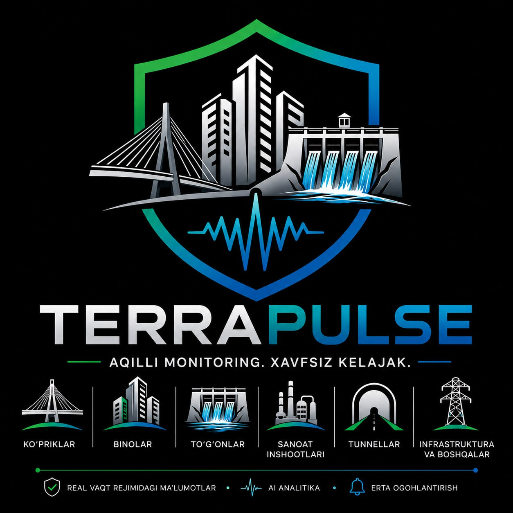

Real-time intelligent monitoring of buildings and bridges. Sensor, field node, cloud — like industrial seismic systems.
Cracks, metal fatigue, foundation settlement — invisible from the outside until it's too late. And the cost of failure is measured in people's safety, especially in a seismic region.
Damage builds up inside the structure and stays invisible for a long time.
Surveys every few months or years — between them the structure is a blind spot.
No one knows for sure whether the building is safe to use.
We build the whole stack ourselves: from the accelerometer and electronics to the embedded firmware and the cloud platform.
Our own design. 3 axes, hundreds of samples per second.
Digitizes the signal and sends it to the cloud over the network.
Ingest, analysis, diagnostics, alerts and reports.
Live signals and the status of every site.
Sensors continuously capture the structure's vibration.
The platform computes peak acceleration, intensity and a condition index.
When values exceed the norm, the system raises an event automatically.
The operator sees the event from any device and makes the call.
A Raspberry Pi field node collects two devices and streams live data to the center — with real channel identity, like industrial systems.
A rare mix of hardware, software and scientific expertise in one team.
Author of the idea and product vision, growth strategy.
Accelerometers, electronics, programming, platform.
Seismic analysis, methods and structural-diagnostics algorithms.
The cloud platform grows with the task — from a single sensor on a bridge to monitoring hundreds of structures across the country.
View the project on GitHub